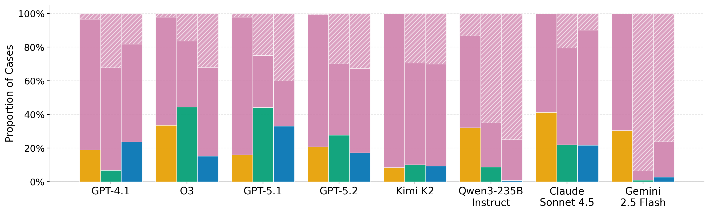
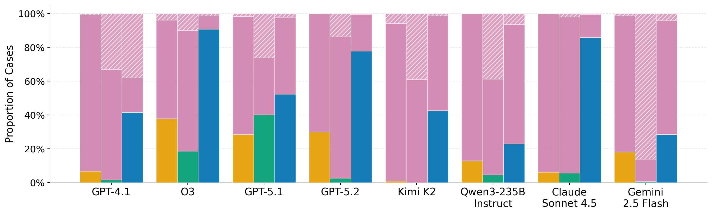

DeonticBench
A Benchmark for Reasoning over Rules
1Johns Hopkins University · 2Télécom Paris
A Benchmark for Reasoning over Rules
1Johns Hopkins University · 2Télécom Paris
DeonticBench is a benchmark for evaluating LLMs on deontic reasoning over real-world legal and regulatory statutes. Given case facts and statutory rules, models must derive legally correct answers — either by generating executable Prolog programs (few-shot or zero-shot) or by answering directly in natural language. It spans five domains — U.S. federal income tax, airline baggage policies, state housing and eviction law, and USCIS immigration appeals — and ships with verified reference Prolog programs for every case, enabling rigorous, executable evaluation of rule-following beyond surface-level pattern matching.
Tax, airline, housing, and immigration law — drawn from actual statutes and case records.
Few-shot Prolog, zero-shot Prolog, and direct natural-language answering.
Each with a ground-truth label and a reference Prolog program for every instance.
| Domain | Description | Label | Hard | Whole |
|---|---|---|---|---|
| SARA Numeric | U.S. federal income tax (§1, §2, §63, §151, §152, …) | Integer (tax owed, $) | 35 | 100 |
| SARA Binary | Entailment / contradiction over individual tax statute clauses | 0 / 1 | 30 | 276 |
| Airline | Airline baggage fee policies | Integer (total cost, $) | 80 | 300 |
| Housing | U.S. state housing and eviction law (50 states) | "yes" / "no" | 78 | 5314 |
| USCIS-AAO | USCIS Administrative Appeals Office immigration cases | "Accepted" / "Dismissed" | 28 | 242 |
Each split is available on
Hugging Face.
Every entry contains a natural-language question, a ground-truth label, and a verified
reference_prolog program encoding the applicable rules and case facts.
Domain names link to their original source datasets; USCIS-AAO is introduced in this work.
The model is given the statute text and 1–2 worked Prolog examples, then writes Prolog for the new case.
The model writes Prolog with only the statute text — no worked examples to imitate.
The model answers the question in natural language, with no symbolic intermediate representation.
On the hard subsets, even the best configuration reaches only 44.4% accuracy on SARA Numeric and ~47 macro-F1 on Housing. No single model leads across all five domains, and bootstrap confidence intervals stay wide.
Open-source models lag in few- and zero-shot Prolog and are highly prompt-sensitive — Qwen3-235B jumps from near-random 0.7 → 32.1 on SARA Numeric between few-shot and direct prompting. The gap narrows on binary tasks.
Legal domains (Housing, USCIS-AAO) are bottlenecked by rule selection; SARA tasks by fact extraction; Airline by arithmetic precision. Most errors are confident wrong answers, not abstentions.
SFT and RL (DPO, Dr. GRPO) improve Prolog quality and binary-task accuracy, but current RL methods still fail to reliably solve precise numeric reasoning. Robust, executable rule reasoning remains open.
| Accuracy | Macro F1 | |||||
|---|---|---|---|---|---|---|
| Model | Setting | SARA Num. | Airline | SARA Bin. | USCIS-AAO | Housing |
| GPT-4.1 | Few-Shot | 23.7 | 41.5 | 39.1 | 53.0 | 46.6 |
| Zero-Shot | 6.7 | 1.7 | 40.5 | 55.5 | 44.7 | |
| Direct | 18.8 | 6.7 | 30.3 | 50.9 | 20.2 | |
| O3 | Few-Shot | 15.2 | 90.8 | 29.5 | 49.4 | 43.0 |
| Zero-Shot | 44.4 | 18.5 | 32.3 | 48.5 | 39.6 | |
| Direct | 33.5 | 37.8 | 59.5 | 52.6 | 20.8 | |
| GPT-5.1 | Few-Shot | 33.1 | 52.3 | 28.7 | 61.4 | 46.8 |
| Zero-Shot | 44.0 | 40.2 | 20.2 | 65.9 | 41.2 | |
| Direct | 15.9 | 28.4 | 54.0 | 71.5 | 18.4 | |
| GPT-5.2 | Few-Shot | 17.1 | 77.9 | 24.3 | 37.6 | 41.1 |
| Zero-Shot | 27.6 | 2.5 | 16.0 | 51.5 | 33.4 | |
| Direct | 20.7 | 29.9 | 25.8 | 58.3 | 17.4 | |
| Kimi K2 Instruct | Few-Shot | 9.3 | 42.6 | 48.5 | 38.2 | 37.1 |
| Zero-Shot | 10.1 | 0.0 | 52.7 | 43.4 | 39.8 | |
| Direct | 8.4 | 0.9 | 68.4 | 51.8 | 24.9 | |
| Claude Sonnet 4.5 | Few-Shot | 21.6 | 85.8 | 28.7 | 63.1 | 42.9 |
| Zero-Shot | 21.9 | 5.7 | 43.9 | 63.0 | 45.0 | |
| Direct | 41.2 | 6.2 | 70.0 | 7.2 | 32.1 | |
| Gemini 2.5 Flash | Few-Shot | 2.7 | 28.4 | 44.7 | 31.8 | 43.4 |
| Zero-Shot | 0.9 | 0.6 | 16.5 | 33.4 | 46.0 | |
| Direct | 30.5 | 18.1 | 61.1 | 45.9 | 30.2 | |
| Qwen3-235B | Few-Shot | 0.7 | 22.9 | 37.8 | 24.4 | 38.6 |
| Zero-Shot | 8.7 | 4.6 | 27.2 | 35.8 | 43.5 | |
| Direct | 32.1 | 12.8 | 66.5 | 53.1 | 25.7 | |
Results on the hard subsets. SARA Numeric and Airline report accuracy (±$1 tolerance); SARA Binary, USCIS-AAO, and Housing report macro-F1. The best score per domain is bolded. Values are means over K generations; 95% bootstrap confidence intervals are reported in the paper.


Figure 2. Performance decomposition for SARA Numeric and Airline. Each model shows three bars (left to right: Direct, Zero-Shot, Few-Shot), split into correct, incorrect, and abstention rates. A large fraction of errors are confident incorrect answers rather than abstentions. Prolog solving raises abstention, while direct prompting trades it for more wrong answers, reflecting a trade-off between coverage and reliability.
@article{dou2026deonticbench,
title={DeonticBench: A Benchmark for Reasoning over Rules},
author={Dou, Guangyao and Brena, Luis and Deo, Akhil and Jurayj, William and Zhang, Jingyu and Holzenberger, Nils and Van Durme, Benjamin},
journal={arXiv preprint arXiv:2604.04443},
year={2026}
}